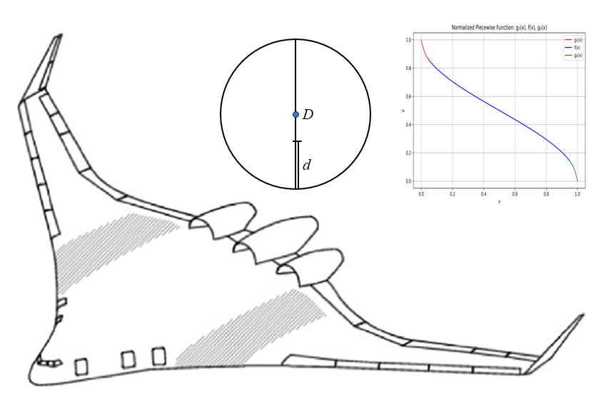

Blended Wing Body Modeling#
GASP Based Geometry#
Comparing to traditional tube and wing model, Blended wing body (BWB) modeling has three major new changes in geometry subsystems:
partially buried engine in fuselage,
Fuselage layout and size parameters,
Exposed wing area computation.
We will explain some details of each feature in this document.
Partially Buried Engine in Fuselage#
In a BWB, an engine can be partially buried in fuselage. Supposed that the nacelle has the diameter \(D\) and the buried diameter is \(d\). In Aviary, we denote the ratio \(x = d/D\). So, \(0 \le x \le 1\). This variable is called Aircraft.Nacelle.PERCENT_DIAM_BURIED_IN_FUSELAGE. Then the percentage of perimeter not buried in fuselage is \(f(x) = 1 - \arccos(2*(0.5 -x))/\pi\). Clearly, if the nacelle is not buried in fuselage at all, then \(x = 0\) and \(f(x) = 1\). Note that function \(f(x)\) has infinity derivatives at \(x = 0\) and \(x = 1\). We have to use two cubic functions instead near the two ends. This is shown in the following image:

The wetted area of nacelle can be computed as usual but scaled down by a factor \(f(x)\).
Fuselage Layout#
In the current implementation, a few parameters are fixed for first class cabin:
Parameters |
Values |
Units |
|---|---|---|
length of first class lav, galley & closet |
8.0 |
ft |
first class seat width |
28.0 |
inch |
first class seat pitch |
36.0 |
inch |
Number of aisles in first class |
2 |
unitless |
First class aisle width |
24.0 |
inch |
Length of first class/tourist class aisle |
5.0 |
ft |
Tourist class passengers per lav |
78 |
unitless |
Lav width |
42.0 |
inch |
Tourist class galley area per passenger |
0.15 |
ft**2 |
Aviary will try to fit the seats in both first class and tourist class based on the above and following parameters:
Parameters |
Units |
|---|---|
Aircraft.Fuselage.SEAT_WIDTH |
inch |
Aircraft.Fuselage.NUM_AISLES |
unitless |
Aircraft.Fuselage.AISLE_WIDTH |
inch |
Aircraft.Fuselage.SEAT_PITCH |
inch |
Aircraft.CrewPayload.Design.NUM_PASSENGERS |
unitless |
Aircraft.CrewPayload.Design.NUM_FIRST_CLASS |
unitless |
Aircraft.BWB.FOREBODY_SWEEP |
deg |
Aircraft.Fuselage.PILOT_COMPARTMENT_LENGTH |
ft |
Aircraft.Fuselage.AVG_DIAMETER |
ft |
Aircraft.Fuselage.PRESSURIZED_WIDTH_ADDITIONAL |
ft |
nose_length |
ft |
The output is the fuselage station of aft pressure bulkhead. If there is no first class cabin, please set Aircraft.CrewPayload.Design.NUM_FIRST_CLASS to 0.0.
The fuselage size group is shown as follows:

Exposed Wing Area Computation#
For blended wing body aircraft, the exposed wing area refers to the wing section that is not fully integrated or blended into the fuselage, but rather extends outwards, potentially with a distinct edge or separation from the body. It must be computed separately and it will be used in angle of attack computation.
One of the dependent parameters is Aircraft.Wing.VERTICAL_MOUNT_LOCATION (denoted by \(x\), where \(0 \le x \le 1\), unitless). Giving \(x\), the body half span at the wing location depends on function \(f(x) = \sqrt{(0.25 - (0.5 - x)^2)}\). Since \(f(x)\) has infinite derivatives at the two ends, we must create two cubic polynomials instead near the ends. The implementation is similar to that of partially buried engine in fuselage and we skip the details here.
Other design parameters are:
Parameters |
Units |
|---|---|
Aircraft.Fuselage.AVG_DIAMETER |
ft |
Aircraft.Fuselage.HEIGHT_TO_WIDTH_RATIO |
unitless |
Aircraft.Wing.SPAN |
ft |
Aircraft.Wing.TAPER_RATIO |
unitless |
Aircraft.Wing.AREA |
ft**2 |